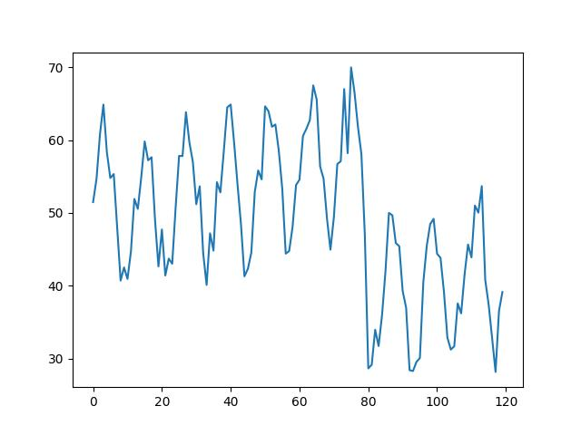
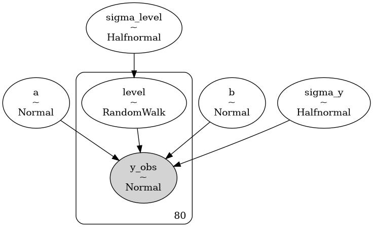
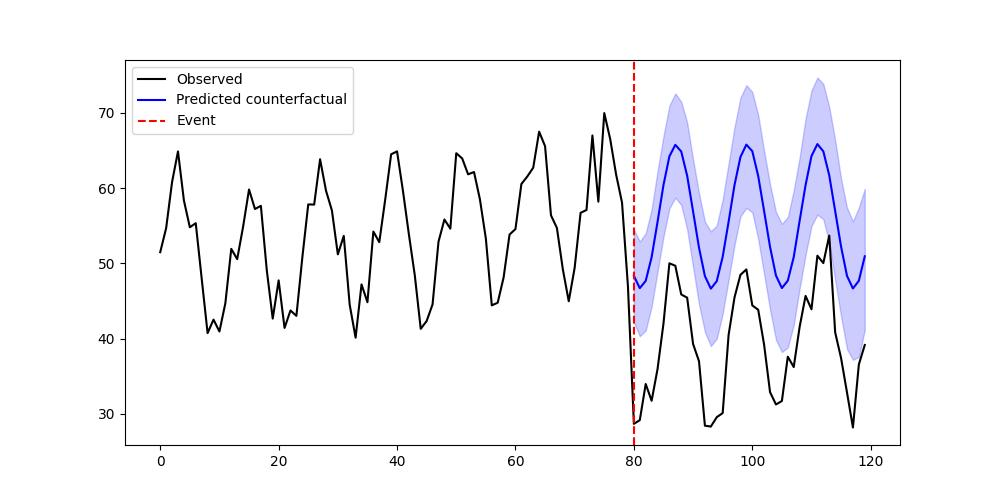

import pandas as pd
np.random.seed(42)
n = 120
time = np.arange(n)
trend = 0.1 * time
seasonal = 10 * np.sin(2 * np.pi * time / 12)
noise = np.random.normal(0, 3, n)
y = 50 + trend + seasonal + noise
event_start = 80
y[event_start:] -= 20
data = pd.DataFrame({'y': y})
data['y'].plot()
plt.savefig('tser_023_bsts_01.jpg')
import pandas as pd
import pymc as pm
import arviz as az
# Split into pre- and post-
y_pre = y[:event_start]
y_post = y[event_start:]
t_pre = time[:event_start]
t_post = time[event_start:]
# --- Build PyMC model for pre-period only ---
with pm.Model() as bsts_model:
sigma_level = pm.HalfNormal("sigma_level", 5)
sigma_y = pm.HalfNormal("sigma_y", 5)
# Local level as a random walk
level = pm.GaussianRandomWalk("level", sigma=sigma_level, shape=len(y_pre))
# Seasonality using Fourier terms
a = pm.Normal("a", 0, 10)
b = pm.Normal("b", 0, 10)
seasonality = a * np.sin(2 * np.pi * t_pre / 12) + b * np.cos(2 * np.pi * t_pre / 12)
mu = level + seasonality
y_obs = pm.Normal("y_obs", mu=mu, sigma=sigma_y, observed=y_pre)
idata = pm.sample(1000, tune=1000, target_accept=0.9, random_seed=42)
gv = pm.model_to_graphviz(bsts_model)
gv.format = 'jpg'
gv.render(filename='tser_023_bsts_04')
Step Grad Sampli…
Progre… Draws Diverg… size evals Speed Elapsed Remaini…
2000 0 0.157 63 195.34 0:00:10 0:00:00
draws/s
2000 0 0.088 31 196.31 0:00:10 0:00:00
draws/s
2000 0 0.140 31 186.91 0:00:10 0:00:00
draws/s
2000 0 0.120 63 172.06 0:00:11 0:00:00
draws/s
Out[1]: 'tser_023_bsts_04.jpg'
level_last = idata.posterior["level"][:, :, -1].values # (chains, draws)
sigma_level_post = idata.posterior["sigma_level"].values
sigma_y_post = idata.posterior["sigma_y"].values
a_post = idata.posterior["a"].values
b_post = idata.posterior["b"].values
# Flatten all posterior samples into a single dimension
level_last = level_last.flatten()
sigma_level_post = sigma_level_post.flatten()
sigma_y_post = sigma_y_post.flatten()
a_post = a_post.flatten()
b_post = b_post.flatten()
n_post = len(y_post)
S = level_last.size
# Forecast latent level paths
level_forecasts = np.zeros((S, n_post))
for i in range(n_post):
if i == 0:
level_forecasts[:, i] = level_last + np.random.normal(0, sigma_level_post)
else:
level_forecasts[:, i] = level_forecasts[:, i-1] + np.random.normal(0, sigma_level_post)
# Compute seasonality for each posterior draw & time point
sin_term = np.sin(2 * np.pi * t_post / 12)
cos_term = np.cos(2 * np.pi * t_post / 12)
seasonality_post = (a_post[:, None] * sin_term[None, :]) + (b_post[:, None] * cos_term[None, :])
# Predicted counterfactual observations
y_pred_post = np.random.normal(level_forecasts + seasonality_post, sigma_y_post[:, None])
# --- Compute posterior effects ---
# Actual - predicted
diffs = y_post - y_pred_post
cum_effect = diffs.sum(axis=1)
print("Posterior mean cumulative effect:", np.mean(cum_effect))
print("95% credible interval:", np.percentile(cum_effect, [2.5, 97.5]))
print("P(effect < 0):", np.mean(cum_effect < 0))
# --- Plot observed vs counterfactual mean ---
pred_mean = y_pred_post.mean(axis=0)
pred_ci = np.percentile(y_pred_post, [2.5, 97.5], axis=0)
plt.figure(figsize=(10, 5))
plt.plot(time, y, "k", label="Observed")
plt.plot(t_post, pred_mean, "b", label="Predicted counterfactual")
plt.fill_between(t_post, pred_ci[0], pred_ci[1], color="blue", alpha=0.2)
plt.axvline(event_start, color="red", linestyle="--", label="Event")
plt.legend()
plt.savefig('tser_023_bsts_03.jpg')Posterior mean cumulative effect: -652.3711999531328
95% credible interval: [-851.94366581 -430.78138666]
P(effect < 0): 0.99975
[devam edecek]
Kaynaklar
[1] Bayramli, Istatistik, Bayes Usulü İstatistiki Analiz